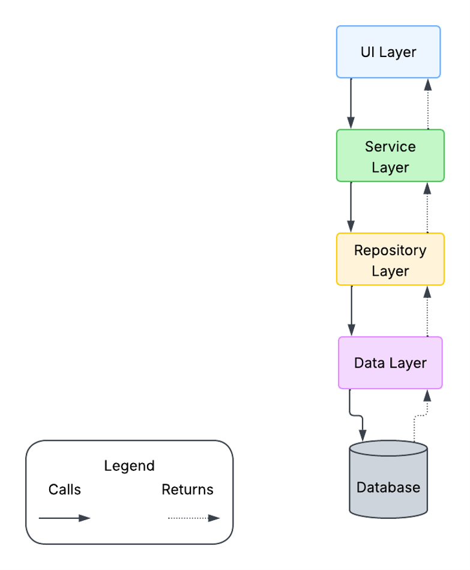
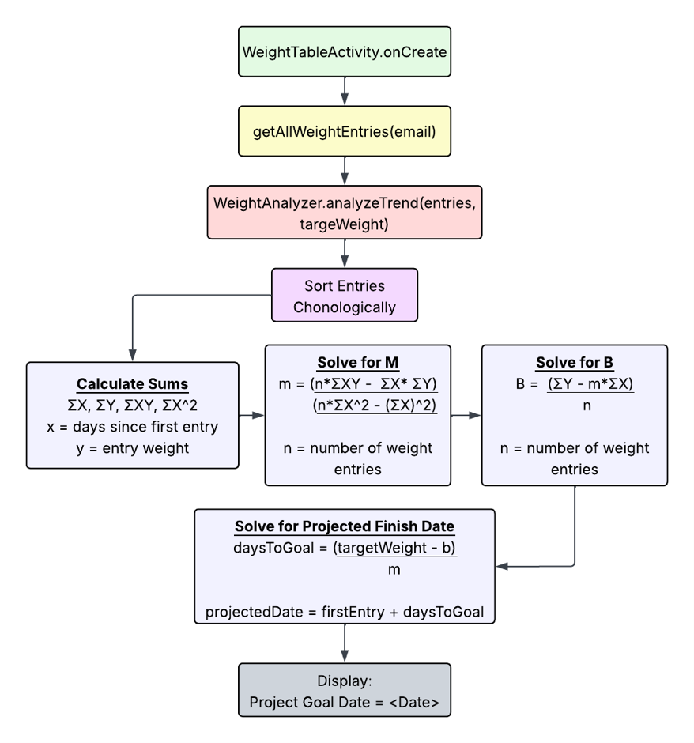
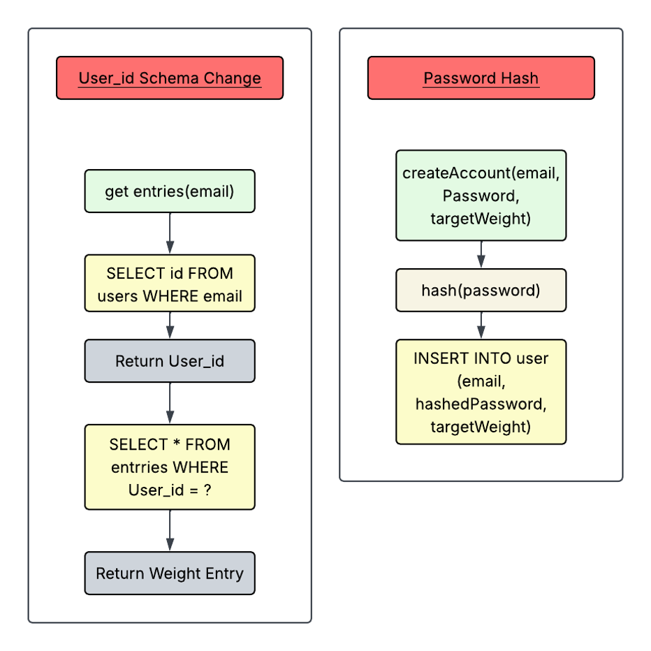

About Me
I am a new technology professional with years of experience in manufacturing and the defense industry. I am excited to create technology based solutions for real world problems.
Collaborating in a team environment
Throughout my coursework at SNHU, I gained hands-on experience collaborating with other developers on a shared codebase. In a course focused specifically on collaboration and teamwork, my team built a Jukebox application where each member contributed features, such as adding songs, to a single shared codebase using Git and Bitbucket. This project gave me a real-time understanding of why disciplined version control practices matter: consistent branch naming, careful merging, and clear communication about who was working on what were essential to avoiding conflicts and keeping the codebase stable. This experience shaped how I approach collaborative development today, reinforcing that technical skill alone isn't enough. Clear communication and shared conventions are what actually make a team's code work together.
Communicating with stakeholders
My experience communicating with stakeholders comes largely from my professional background outside the classroom. I am certified in 8-Step Problem Solving, a structured methodology that emphasizes going directly to the people closest to a problem which is commonly referred to as "getting boots on the ground". Rather than relying solely on secondhand information. This process reinforced that stakeholders often have valuable insight into a problem that isn't visible from the outside, and that they are ultimately the ones who must live with and work within whatever solution is developed. I've carried this principle directly into my approach to software development: a technically correct solution isn't truly successful unless it also serves the people who will use it. Understanding stakeholder needs early, rather than after a solution is already built, is central to how I approach requirements gathering and design decisions in my computer science work.
Data Structures and Algorithms
My understanding of data structures and algorithms was built directly through coursework such as Data Structures and Algorithms: Analysis and Design, where I implemented a binary search tree in C++ to store and manage bid records. This project required me to build core operations, insertion, in-order/pre-order/post-order traversal, search, and deletion. Including handling the more complex cases of removing a node with two children by locating its in-order successor. I also measured and compared the runtime performance of different operations using clock timing, which reinforced how algorithmic choices directly affect real-world performance, not just theoretical complexity. This foundation carried directly into my capstone work, where I applied similar algorithmic thinking to implement a linear regression calculation from first principles, reasoning explicitly about time complexity and edge cases rather than relying on a library to handle it for me.
Software Engineering and Database
Security
Languages & Environment
Development Tools
Frameworks & Libraries
My Projects
Weight Tracking Mobile Application
Weight Tracking Application (Java, XML, and SQLite). This was developed initially as a lightweight mobile application that allows users to create an account with a goal weight, login with the created account, add and delete entries and Opt-in or out of SMS permissions to send notifications when the target weight is reached.

Login Screen

Create Account Screen

SMS Permissions Screen

SMS Phone Number Entry Screen. This only comes up if the user selects allow in the SMS Permissions Screen

Main Screen after creating an account and loging in, This screen is the applications main function

Add Entry Screen, allows users to add weight entries based on date and weight

Main Screen, this picture shows the table with entries and the result of linear regression calculations

Delete Entry Screen, allows the user to delete one or multiple entries
Manual Code Review Video
This is a video of me manually reviewing my code. The video was made and edited using Microsoft Clipchamp and uploaded to YouTube. The link below will take you to the YouTube video to view.
View VideoSoftware Design and Engineering
This project showcases enhancements in Software Design and Engineering that I made to my Weight Tracking Mobile Application. I added a Service and Repository layer to sperate concerns and to improve the maintainability of the application.

The above image is a highlevel over view of the new architecture for my application
I chose this artifact because it fulfilled all the CS 499 course outcomes and showcased my ability to apply what I've learned at SNHU to a real application that I created. For the software engineering portion of the capstone, I refactored the application by adding service and repository layerscreating UserService and WeightEntryService to house validation logic, and UserRepository and WeightEntryRepository to keep the service layer decoupled from the database. The process pushed me to view my own code as an outsider would, which was a valuable real-world exercise in critiquing and improving existing work. It revealed how much I still have to learn, but also showed me firsthand how separating concerns reduces redundancy, improves readability, and strengthens the overall codebase. I used the feedback from Milestone Two, which was to remove all unused imports and secure password storage. I addressed these issues by deleting the unused imports and by tackling secure password storage with changes made later in the course.
Original Work Enhanced WorkAlgorithms and Data Structures
This project showcases enhancements in Algorithms and Data Structures that I made to my Weight Tracking Mobile Application. A linear regression algorithm was used to project the date that a user would reach their goal weight based on their enteries.

The above image is a a flow chart of the new Algorithm for my application
Currently, the application sorts date data (stored as strings in MM/DD/YYYY format) by entry order rather than by actual calendar date, a gap I addressed in this enhancement. Re-sorting by calendar date uses an O(n log n) sorting algorithm, which is an efficient standard for ordering a dataset of this size without unnecessary overhead. I added a class to compute linear regression over the sorted data, giving users a projected date for reaching their goal weight; this calculation runs in O(n) time, since it only requires a single pass through the data to compute the necessary sums (x, y, xy, and x²) before solving for the slope and intercept. I chose an O(n log n) sort paired with an O(n) regression because together they keep the overall enhancement efficient. The sort is the more expensive step, but it's necessary to guarantee correct chronological order, which the regression calculation depends on to produce an accurate trend. I chose this artifact because it met all CS 499 course outcomes and let me showcase my applied learning from SNHU. This enhancement satisfied course outcomes by building the linear regression formula demonstrated a computing solution designed around CS practices and standards. Integrating it into the service layer from Category One showcased well-founded technical skills. The work also built directly on my Category One enhancement, where separating business logic from database logic made it easy to introduce a new WeightAnalyzer service and wire it into the WeightTableActivity. The trickiest part was updating the UI to display the projected completion date cleanly, since the original design hadn't accounted for it.
Original Work Enhanced WorkDatabases
This project showcases enhancements in Databases that I made to my Weight Tracking Mobile Application. The enhacements that I made were creating a primary/foreign key relationship as well as salt hashing the users password before storage into the database.

The above image is a a flow chart of the enhancements made for the primary/foreign and password hashing for my application
I selected this application because I built it myself and wanted to challenge myself to bring it closer to industry best practices. During the code review, I identified two real weaknesses: the entries table lacked a proper foreign key relationship to users, and passwords were stored insecurely. I fixed the first by connecting entries to the users table's primary key (id), and addressed the second by building a HashPassword service that combines SHA-256 hashing with salt before storing any password. This enhancement was the most straightforward of the three I completed. I had to refresh my knowledge of password hashing, since it had been a while since I'd implemented secure credential storage, but that review was a useful challenge. The bigger difficulty was naming my unit tests. I found myself writing very long, literal method names to fully describe each test's behavior, and I'm still unsure whether that's the right approach versus using shorter names paired with comments. After submitting this enhancement, my instructor reviewed the changes and recommended two further improvements: replacing the destructive onUpgrade() method with a migration that preserves existing data, and replacing the single-pass SHA-256 hash with a dedicated password-hashing algorithm such as bcrypt, scrypt, or Argon2. I incorporated both pieces of feedback. I switched HashPassword from manual SHA-256 hashing with a separately stored salt to bcrypt, which generates and embeds its own salt automatically. This actually simplified my implementation, since it removed the need for a separate salt column and manual salt-generation logic. I also rewrote onUpgrade() to use ALTER TABLE and UPDATE statements that preserve existing entries and users data during a schema change, rather than dropping and recreating both tables. This process reinforced that even a working, tested enhancement can still have room for improvement once reviewed by someone else, and that incorporating feedback sometimes leads to a simpler solution than the original approach, not just a more complex one.
Original Work Enhanced WorkGet In Touch
I am currently available for freelance work and full-time engineering roles.
Email: heathbundy89@gmail.com